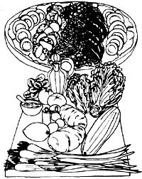
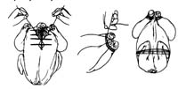
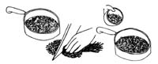

If Sigrid Shepard's Great-aunt Myra hadn't gone to China as a missionary, Sigrid might never have written The Thursday Night Feast and Good Plain Meals Cookbook. And if that had happened, the English-speaking world would have been deprived of an exceptionally good culinary book.
Feast (as Sigrid refers to it) is a hefty natural foods how-to manual that features the cuisines of China, Japan, Indonesia, India, and the Middle East. And not just "features" those cuisines ... but tells you how to use common or easy-too-btain ingredients to produce over 800 of the most mouthwatering dishes imaginable (none of which you could call plain, by the way).
But-to get back to Aunt Myra-it was she who first brought the Orient to young Sigrid's attention with the intriguing gifts she sent home from the other side of the world. In later years, Sigrid expanded on her Aunt Myra-inspired early fascination for the East by becoming expert in first Chinese, then Japanese cuisines ... and she didn't stop till she'd mastered many of the best kitchen techniques of the whole Eastern Hemisphere!
In her introduction to the book, Sigrid explains how and why Feast came to be: "Like many people at the beginning of the 70's, I became interested in natural foods, and I found that Eastern dishes were a "natural" for this type of food preparation ... the cardinal rule for both being not to cook out the vitality.
"Eastern food is a feast for the eye, the palate, and the body. The short cooking time and inexpensive ingredients make it a quick, economical cuisine for busy people who don't want to live on denatured, prepackaged, additive-soaked food.
Feast resulted from the urging of friends and neighbors who kept asking for recipes and finally talked me into teaching them for a year of Thursday nights. The class came to be called the Thursday Night Feast because we prepared 15 to 20 dishes each meeting and then feasted on them. Thanks to Margaret Putman's illustrations, each technique that was demonstrated in class is shown step by step in the book.
"Recipes have been tested repeatedly, so they're easy to follow and will produce a uniform result ... no matter what the experience of the cook. Every step-how to saute onions, how to soak mushrooms, how to deep-fry-is fully explained each time it's used. All terms are translated or explained as they occur ... no referring to page 370 when you're on page 216. The same goes for variations: They're always directly opposite the main recipe on a two-page spread.
Feast , however, is not a culinary dictator. Many different substitutes are suggested, so that when you're out of this or low on that there are always alternate ingredients easy to find in North America. Elaborate kitchens and equipment are not a must for preparing Eastern dishes, either. Old-fashioned cast-iron pots and frying pans and improvised steamers work as well as woks, karhais, and bamboo steamers, and many of the feasts have been prepared over Yukon campfires as well as in fancy urban kitchens.
"For both philosophical and economic reasons, the peoples of the countries covered in this book have subsisted on lowmeat and vegetarian diets for centuries. Beans, bean curd, sprouts, lentils, nuts, and seeds are used as a protein source in place of-or to enhance the limited use of-expensive meat. So Feast is designed for both vegetarians and meat-eaters. It's low on the use of eggs and dairy products, and calls for no monosodium glutamate (MSG).
"The major substitutions (to make it a natural foods cookbook) are honey for sugar, brown rice and whole wheat for white processed varieties, cold-pressed unsaturated vegetable oils for animal fat, and sea salt for processed salt. Cooking methods haven't been changed, because these cultures are already into a healthful way of cooking.
"The recipes feature many herbs and spices-as well as beans, grains, fruits, vegetables, and nuts-but prepackaged and prepared foods are never used in this economical, nutritious cuisine. Most of the dishes can be served hot or cold the next day for lunch or dinner, so nothing is wasted. In fact, one of the beauties of Eastern food is that a leftover dinner-with just one or two dishes added-can turn into a feast.
"Sauteing, steaming, stir-frying, deep-frying, and grilling are the main methods of cooking. Low fuel use and small stoves with no ovens have dictated these methods, which-translated to Western kitchens-make for low energy use. Much time is spent in preparation: grating, slicing, julienning, chopping, and marinating ... all steps where others can lend a hand to make the process go faster. Although many dishes in Feast are long on preparation time, there are also many quick meals that can be put together in 20 to 30 minutes.
"Here in North America, we have one of the richest harvests the world has ever enjoyed, yet we turn that harvest into a tasteless nutritional wasteland. Feast was put together to help you discover the simple methods and fine foods which millions of people for thousands of years have used to provide themselves with a delicious and nourishing diet. Whether you eat to live or live to eat, make it a feast!"
Sounds good, and it is! Here, to give you just a tantalizing sample of the kind of fare Sigrid's kitchen manual has to offer, are two recipes selected from the Indian section of her book.
BAKED CHICKEN WITH SPICES AND STUFFING
1 large roasting chicken or 1 large chicken cut into pieces
1teaspoon sea salt
1/4 teaspoon black pepper
Wash chicken well. Rub with salt and pepper inside and out.
Stuffing:
3 tablespoons butter
1/4 cup almonds, chopped fine or slivered
1/4 cup raisins
1/2 teaspoon coriander
1/4 teaspoon cumin
1/4 teaspoon cinnamon
1/4 teaspoon cardamom
1/4 teaspoon saffron or 1/2 teaspoon turmeric
1/4 teaspoon cloves
1/4 teaspoon black pepper
1 tablespoon honey
3 to 4 cups cooked rice
Heat a small cost-iron skillet over medium heat. Add and melt butter. Add almonds, stirring and trying them for two to three minutes until they're just brown. Remove from heat. Add spices (which should be fresh ground, if possible), raisins, and honey ... and mix well. Then stir into rice in a large bowl. Stuff chicken with rice, bind for easy turning, and place on a rack. (Or, if working with a cut-up bird, place stuffing in a baking dish and cover with chicken pieces.) Bake at 3250 for 20 to 30 minutes (until partly done).
Masala:
2 teaspoons coriander seeds
1 teaspoon cardamom, slightly crushed
1/2 teaspoon cumin seeds
1/4 teaspoon saffron
1/2 teaspoon cinnamon
1/2 teaspoon cloves
4 or 5 black peppercorns, parched and crushed
While chicken is roasting, mix masala spices well (again, they should be fresh ground it possible). Set aside.
4 tablespoons vegetable oil
1 yellow onion, minced
3 thin slices ginger, minced
Heat a small cast-iron skillet over medium-high heat. Add oil, and heat it until a small piece of onion sizzles in it. Add onions and ginger, stirring and frying them five to ten minutes until just tender. Mix with spices and spread paste over partly baked chicken. Continue to bake for 40 to 50 minutes until done (if you're roasting your chicken whole, baste it occasionally with drippings), and serve hot. Serves six.
3 tablespoons vegetable oil
1 medium yellow onion, minced
1/4-inch fresh ginger root, grated
2 tablespoons fresh parsley, chopped or coriander leaves, chopped
Heat a cast-iron skillet over medium-high heat. Add oil, and heat until a piece of onion sizzles in it. Add onion, ginger, and parsley or coriander. Stir and fry five to ten minutes until onions are soft and transparent but not brown.
2 medium potatoes, cut in 1/4-inch cubes
Add to onion mixture, and stir and try five to ten minutes until potatoes are half done.
2 medium tomatoes, cut in 1/4-inch cubes, or I cup stewed tomatoes
3 tablespoons tomato paste
1 teaspoon sea salt
1/4 teaspoon black pepper
1 to 2 teaspoons curry powder
Add to potatoes. Mix well, cover, and simmer five to ten minutes until potatoes are almost done.
1/4 to 1/2 pound small shrimp, shelled, deveined, and steamed five to ten minutes
1 tablespoon lemon juice
Add to potatoes and tomatoes, mixing well. Cook three to five minutes, until most of the liquid is absorbed and the shrimp are well coated with sauce. Serve hot, with a rice dish. Serves four to six.
Reprinted by permission from The Thursday Night Feast and Good Plain Meals Cookbook, a $9,95 paperback by Sigrid M. Shepard, copyright© 1976 by the author Distributed to bookstores in the U.S. by BOOKPEOPLE, Berkeley, Calif. and in Canada by J.J. Douglas Ltd., Vancouver, B.C., and available from Mother's Bookshelf.
|
 ILLUSTRATIONS BY MARGARET V. PUTMAN |
 |
 |
|
|
|
|